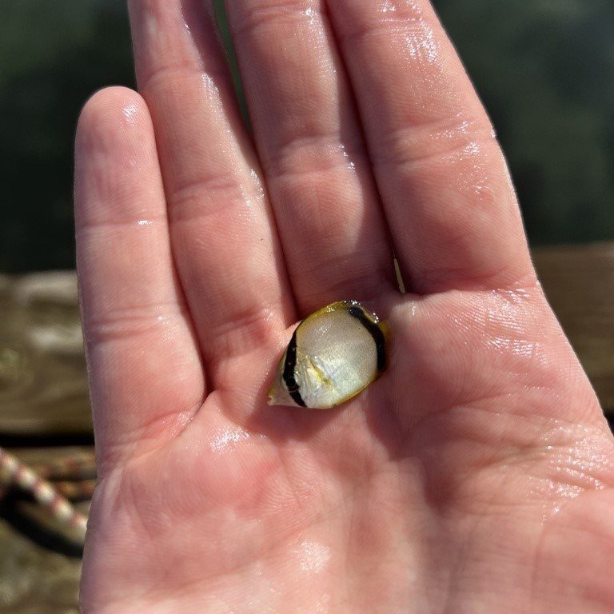
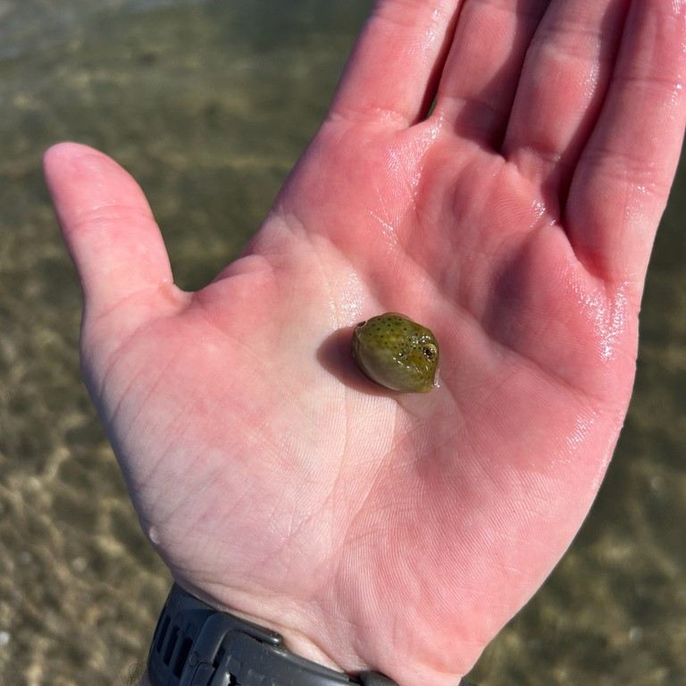
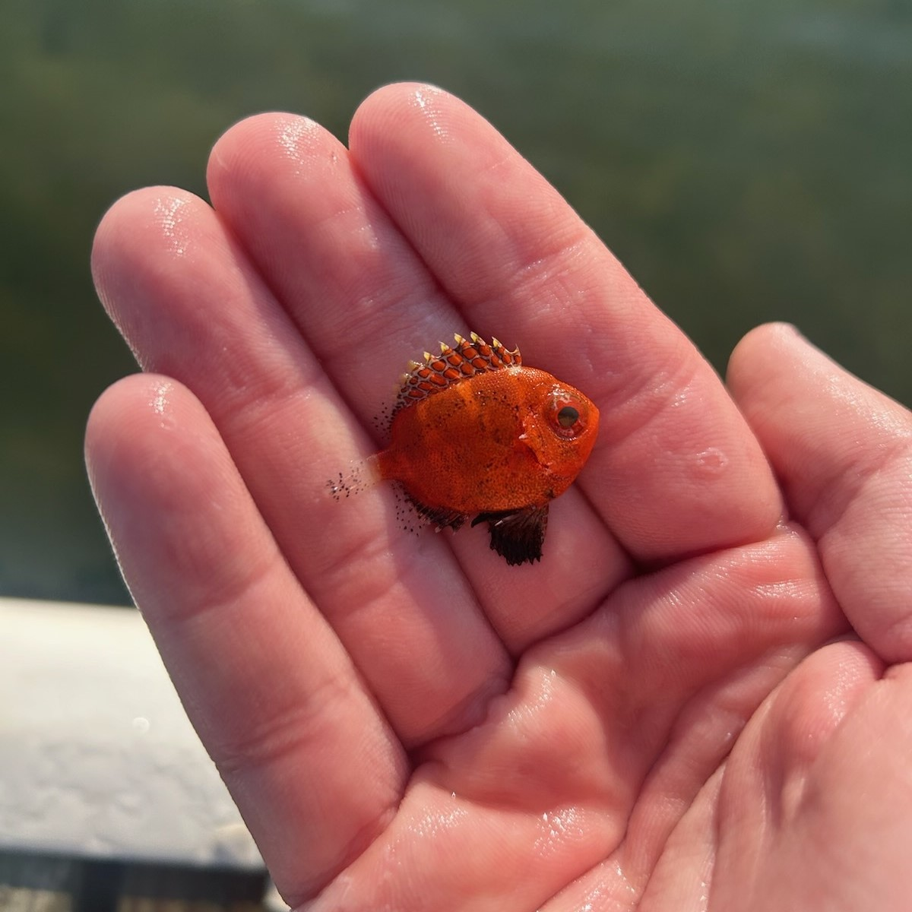
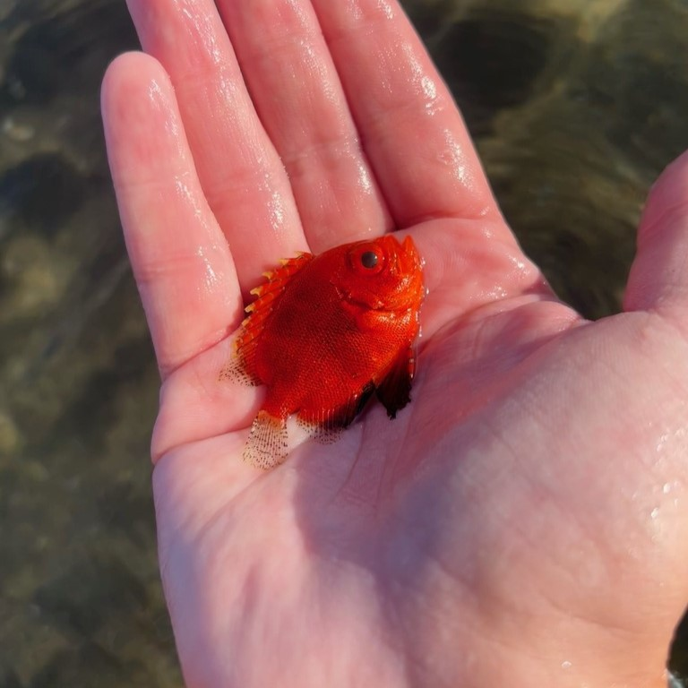

Gulf Stream Orphans
August — Somewhere Off the Coast of Florida
A Spotfin Butterflyfish weaves through the nooks and crannies of a bustling coral reef. He is tailed closely by his female partner. They have been together for several years; in fact, it was love at first sight. Like most butterflyfish, they are monogamous, pairing and mating for life. As dusk falls over the reef, the two engage in an elaborate display of courtship: chasing and circling each other, culminating in an upward swim towards the surface where the pair simultaneously releases thousands of eggs and sperm into the open water. They breed year-round, but throughout the summer they will repeat this routine almost daily.
By the following day, hundreds of microscopic translucent larvae have begun their pelagic journey. The larvae drift with their fellow zooplankton until they reach about an inch in length, when they’ll look to find a new coral reef to call home. The Spotfin Butterflyfish, Chaetodon ocellatus, has used this breeding method for millennia, since they evolved into their current form some 2 million years ago, to shield their offspring from predators and to disperse their genes across the seas. Chaetodon ocellatus will grow quickly, reaching an inch by summer and three inches by the winter. Some of the larvae make it to nearby reefs safely, immediately seeking out crevices in the corals, where they can continue to hide, eat, grow, and ultimately live out their lives.
Some are not so lucky. The Gulf Stream is a winding underwater river that surges constantly up Florida’s eastern coast, sweeping along everything in its path. The tiny butterflyfish is neither strong enough nor inclined to resist it; after all, the very purpose of open-water spawning is for offspring to drift with the currents and disperse across distant parts of the ocean. Instinctively, the young fish surrender themselves to the flow. Unfortunately for these few unlucky ones, this flow is taking them very far away from home.
The Gulf Stream is the western boundary of the North Atlantic Subtropical Gyre, a large, clockwise-rotating system of ocean currents, and originates in the Gulf of Mexico, formed by powerful east-to-west trade winds near the equator. These winds push warm surface water across the Atlantic into the Caribbean and the Gulf. This continuous pushing causes the sea level in the Gulf to be slightly higher than the Atlantic. As the water tries to flow back out, the Coriolis effect deflects it tightly to the north against the eastern coast of the U.S., squeezing the immense amount of water through the constricted Florida Straits, creating a fast, deep, and narrow jet of water, which we today call the Gulf Stream, thanks to Benjamin Franklin’s research of the stream and his naming of it in 1762.
Most picture the famous scene from Pixar’s Finding Nemo, and it’s not so far off. The Gulf Stream averages around 50 miles wide, half a mile deep, and flows roughly three to five miles per hour. However, to the tiny butterflyfish, it may feel just like the rollercoaster ride that Nemo and Crush were on inside the East Australian Current (EAC). If you or I were only one inch tall, traveling at five miles per hour would feel like moving at a blistering 360 miles per hour, and you’re only a few days old.
In just under a week, Chaetodon ocellatus moves from the coast of Florida up to Cape Hatteras, North Carolina, where the Gulf Stream loses its shape as it departs from the coast, snaking wildly back and forth. These massive, looping bends of water will inevitably meander too far north, and the current will trip over itself and pinch shut. This action breaks the loop off from the main stream, creating an isolated, spinning vortex of water now being pushed by smaller winds and currents, the same process by which an oxbow lake forms from a sinuous river. The butterflyfish is once again along for the ride, like a highway exit ramp taking the fish to its final destination.
These rings slowly drift west at speeds of one to two miles per hour, and because the ring rotates (clockwise), it holds its shape, and the Caribbean water inside can’t immediately mix with the freezing North Atlantic water surrounding it. The swirl of water acts like a protected oasis, keeping the butterflyfish and millions of others alive in an environment that would otherwise kill them.
Eventually the spinning edge of the vortex collides with the steep, underwater cliff of the continental shelf off the northeastern United States. The collision causes the tropical water to spill out over the wall, causing long, thin ribbons of water to flow across the shallows for hundreds of miles, stretching all the way to the coasts of New England and even Canada, and bringing with them butterflyfish and other orphans of the Gulf Stream.
September — Somewhere Off the Coast of Rhode Island
Standing in thigh-deep water, I plunge my net into the tall eelgrass, hitting the sand and dragging the net back towards my feet, making sure to keep the top of the net near the bottom of the sea at all times. Once back at my feet, I quickly turn the net right-side up and lift the net up out of the water. I use one hand to lift the contents of the net closer to my face and the other to sort through the grass, rocks, and weeds.
This time of the year I am on the hunt for tropicals. Nothing against the local fauna of Cunners, Tautogs, and Grubbies, but I know what this warm water usually brings: Gulf Stream Orphans (GSOs). The animals I don’t get to see in my backyard year-round, species like Buffalo Trunkfish, Short Bigeyes, and Spotfin Butterflyfish, now inhabit my beach.
As I continue to sift, I spot a glimmer of white. Maybe a broken piece of shell from a Surf Clam or other bivalve. However, this glimmer of white shines in between a distinct yellow crescent, a shade not typical for the Rhode Island coastline. Then my eyes light up as the colors suddenly move. I gently move the debris out of the way and place the net slowly back in the water. My hands encircle what I now know is a GSO. I use one hand to cup and scoop the fish out of the net and instantly transfer it to my nearby bucket.
And there it is in all its glory: a baby Spotfin Butterflyfish. Barely as long as one of my fingers is wide, most likely no more than a few weeks old, and it has already traversed nearly 1,500 miles of open ocean. The C. ocellatus pictured below was the one I caught last year. You cannot yet see the telltale spots (which look like a pair of eyes to predators and give the fish its name, Spotfin) on the base of the soft portion of the dorsal fin; rather, as a juvenile, there is a second black bar that runs from the base of the dorsal fin to the base of the anal fin. The black bar that runs vertically through the eye and across the head is visible throughout its life. The two bars, flat, disc-like shape, and bright yellow trim allowed for easy identification.

The name Chaetodon ocellatus translates to “bristle tooth” and “marked with spots” — Chaetodon is derived from the Greek roots “Chaite,” meaning hair or bristle, and “odon” (or “odous”), meaning tooth, referring to the characteristic comb-like or bristle-like teeth the Chaetodontidae family possesses. “Ocellatus” is derived from the Latin word “ocellus,” which is the diminutive of “oculus” (eye), translating to “marked with spots” or “having little eyes.”
Juvenile fish like this Spotfin Butterflyfish are the Gulf Stream Orphans that have puzzled people for centuries. Spotfin Butterflyfish are typically found in shallow (less than 100 feet deep), clear waters of the tropical and subtropical western Atlantic coral reefs, mangroves, and sandy bottom flats — their favorite spot to feed. Additionally, their natural range extends all the way from North Carolina to Brazil, a testimony to the power of the Gulf Stream and pelagic, broadcast spawning. So what were they doing off the coast of New England? In the fall?
Documentation of GSOs dates back to the 1800s, when scientists in Woods Hole found and recorded tropical fish species off the coast of Cape Cod. Because these fish are non-migratory, they have not yet adapted to instinctively finding their way back home. They also cannot survive waters below 50 degrees Fahrenheit; this combination means that their time is limited in the North Atlantic. By November, their chances of survival are near zero. The New England Aquarium led the charge in researching and saving GSOs starting in the 1980s, pioneering annual collecting trips in the summer and fall to rescue GSOs from the imminent New England winter and giving them a second life behind glass with food, warmth, protection, and TLC.
April — On the Fourth Floor of the New England Aquarium
My first day as a Giant Ocean Tank Assistant Dive Volunteer. I shook hands with the then-manager of the Giant Ocean Tank, Mike O’Neill. I didn’t know it at the time, but Mike also happens to be the founder and leader of the Gulf Stream Orphan Project, a citizen science initiative founded in 2016 that tracks and reports tropical and subtropical marine fish carried by the Gulf Stream into the Northwest Atlantic. The goal of the Project is to build a dataset that can teach us more about the ecology of the coastal Northwest Atlantic and alterations caused by Gulf Stream activity as well as the influence of climate change on all of the above.
The Gulf Stream has greater importance to our world than carrying GSOs to different parts of an ocean. Without it, England, for instance, would have a similar climate to Calgary, Canada, which shares the same line of latitude but experiences vastly different temperatures. The Gulf Stream carries the tropical water up the eastern seaboard of the U.S. and Canada and is then pushed east by the prevailing westerlies, bringing warm air and water to western Europe.
The data the Project provides is invaluable, and the best part is that anyone can contribute — real-life, everyday citizen scientists. YOU can go out in your backyard (and if you’re not into fish, you can upload your findings of all kinds of species, plants, or animals) and directly contribute to science with real-world, large-scale implications. I use the iNaturalist app, another citizen science platform that maps global biodiversity observations, to upload my GSO findings. You can even submit data directly to the Project through iNaturalist. The Project leverages the crowdsourced data on where these animals appear and how long they survive, which helps researchers track marine biodiversity and monitor shifts in ocean currents and changes within the Gulf of Maine (one of the fastest-warming bodies of water on Earth).
Many GSOs are collected and distributed to local aquariums, including those in Boston and Newport. They live on borrowed time, yet serve a lasting purpose: educating the public about how and why they arrive in these waters at all. They are the epitome of conservation through education and offer insight into their specific species as well as broader conservation efforts to protect our marine life. Moreover, aquarists can collect tropical fish species without having to remove an animal from its local habitat in the Caribbean and transfer the fish thousands of miles to its exhibit.
January — Inside the Giant Ocean Tank
A school of Spotfin Butterflyfish flurries past my mask. I count six of them; they are always in pairs. I can’t help but think to myself that these fish may be closely related to the Spotfin I caught last September. In fact, the six Spotfins inside the Giant Ocean Tank (GOT) were once all GSOs as well. Caught on a collecting trip a few years back in Jamestown, Rhode Island, they were brought to the New England Aquarium (NEAq) as tiny juveniles. Once they reached their full adult size, about two years later, they were introduced into the 200,000-gallon GOT, the centerpiece of the building.
The GOT also holds other GSOs: two Snowy Groupers, Hyporthodus niveatus; two Permits, Trachinotus falcatus; one Yellow Jack, Caranx bartholomaei; one Red Grouper, Epinephelus morio; and one Short Bigeye, Pristigenys alta. We are also expecting two Orange Filefish, Aluterus schoepfii, to be added to the GOT within the year; they have been in our Quincy Animal Care Center for nearly two years, growing and thriving as they gear up for their big move. And most famously, the GOT holds three sea turtles — the queen of the tank, Myrtle, the Green Sea Turtle, Chelonia mydas; and two Loggerhead Sea Turtles, Caretta caretta, named Carolina and Retread, that were rescued off the coast of the Carolinas about 40 years ago.
Seen here is our school of Spotfin Butterflyfish in the GOT. They are usually found in this crevice in the main sand tray. It’s a prime spot for them to find leftover food and hiding spots. Also seen is a Smallmouth Grunt, Brachygenys chrysargyrea; two Caesar Grunts, Haemulon carbonarium; and a Blue Angelfish, Holacanthus bermudensis.
Sea Turtle Rescue and Rehabilitation
For more than 35 years, the New England Aquarium has partnered with Mass Audubon’s Wellfleet Bay Wildlife Sanctuary to rescue, rehabilitate, and release endangered and threatened cold-stunned sea turtles off the coast of Cape Cod.
Sea turtles, like the vast majority of bony fish, are cold-blooded (ectothermic), meaning their body temperature adjusts to match the surrounding water. Sea turtles move north, following the Gulf Stream and the warm water, to the Northeastern U.S. in the summer and move back south as winter approaches. Unlike GSOs, sea turtles are migratory species and can use their internal biological compass to naturally find their way back south to warmer water. The tricky part is getting around the arm of Cape Cod. It’s in the shape of a perfect hook cutting across the Atlantic and trapping thousands of sea turtles, especially juveniles, on their way south.
As winter comes and temperatures continue to drop, these turtles are unfortunately S.O.L. Sea turtles can suffer from a form of hypothermia called “cold-stunning,” and each fall in Cape Cod Bay these turtles get stuck in the cooling waters, become cold-stunned, and wash up on beaches. It takes a massive team to begin the process of rescuing, rehabilitating, and releasing these animals. Treatment can last from several months to years until a turtle is healthy enough to be released into the ocean.
In 2025 alone, 473 total turtles were admitted to the NEAq’s turtle hospital, including 404 Kemp’s Ridleys, 48 Green Sea Turtles, and 21 Loggerheads. Close to 85% of these turtles will be released back into the ocean.
Carolina and Retread, the two Loggerheads in the GOT, were both severely cold-stunned several decades ago. They were unable to pass their foraging tests in order to be released back into the wild, so the NEAq happily took them in as full-time residents. They are both nearly or fully blind as a result of the cold-stunning and require special feeding routines and constant medical attention. Otherwise, they are happy and healthy inside the comforting 75-degree water inside the GOT. I like to give them gentle pats on their backs as they are napping.
One Small Fish, One Big Impact
You may wonder why I chose the Spotfin Butterflyfish as the focal species — why not the Short Bigeye or the Buffalo Trunkfish, Lactophrys trigonus? Quite simply, we know far more about the Spotfin than we do about either of the others. Much is still unknown of the breeding habits of the Short Bigeye and the Buffalo Trunkfish; we know they release floating pelagic eggs just like our friend C. ocellatus, but we don’t know as definitively where, when, and how. This uncertainty underscores the importance of the GSO Project, whose work continues to shed light on the life histories and behaviors of these remarkable and little-understood species.
I often look for GSOs starting in early September to mid-October. In knee- to waist-deep water, I use one long net, with a holding bucket nearby on the beach or a dock, and repeatedly cast the net out over 1- to 3-foot-tall sections of eelgrass. I go early in the morning right after dawn. I most often catch Short Bigeyes (pictured below — notice the size difference, which means they are either arriving at various stages in their life or possibly staying in RI for longer than we think) and Spotfin Butterflyfish. I caught my first Buffalo Trunkfish (pictured below) this past year and have a vague memory of catching a Blue Angelfish, Holacanthus bermudensis, in a nearby marsh many years ago. The fish are certainly seeking out very shallow water where they can easily hide and feel the heat of the sun. I have found Short Bigeyes all the way up at the mouth of said marsh; my guess is that they like the warm water that travels out of the salt pond on an outgoing tide.



As of now, there is no data on the negative impacts of GSOs on local ecosystems, and we need to continue researching our annual visitors to keep it that way. GSOs are a gift from Mother Nature. They provide a phenomenal, one-of-a-kind opportunity for everyday people to partake in a citizen science project and become a citizen scientist themselves, contributing to the local and global science behind human-driven climate change. Talk about one small fish with one big impact.
Follow my iNaturalist account, cgagnon4, for my GSO findings this year.
First Posted on 5/22/26. Last Updated on 6/3/26.